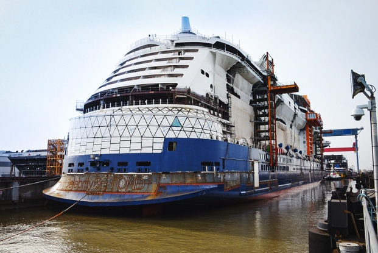

Here's How You Can Win a $10,000 National Park Adventure
In honor of National Park Week, which runs through Sunday, April 25, this company is giving away a $10,000 adventure at one of the country's national parks. Evolve, a plant-based protein shake company, is showing its commitment to getting Americans outdoors by donating $5,000 to the National Park Foundation, as well as offering one person an epic trip to a national park of their choice. Additionally, 50 winners will get an America the Beautiful annual pass (worth $80), which grants access to all national parks and wildlife refuges. Another 100 winners will get a case of Evolve protein shakes. "Over the past year, Americans have experienced a renewed appreciation for spending time outside, and we know that those with active lifestyles are increasingly looking for ways to make incrementally healthier choices that are also more sustainable," Anuj Bhasin of Evolve's parent company, PepsiCo, said in a statement. Those who are at least 18 years old and living in the U.S. can visit DrinkEvolveSweeps.com to enter by 11:59 p.m. ET on May 31, 2021. Alternatively, entries are also accepted via Instagram or Twitter by first following @DrinkEvolve and then sharing which national park you dream of visiting with the tags #GetOutsideWithEvolve and #Sweepstakes. Those interested can also text EVOLVE to 22639 to receive an entry link.
Electric Vehicles Are Changing Safaris in Kenya
If you've ever seen a cheetah stalk its prey, you know that even for the fastest animal on
the plain, the hunt is an exercise in patience and silence. And if you're lucky enough to be
the one stalking a big cat while on safari, you know that pursuit demands the same quiet
stamina — until the noiselessness of the prowl is punctured by the diesel roar of your
open-air Land Cruiser.
Enter the electric safari vehicle, a green innovation that could upend the Kenya safari
experience — and help preserve the delicate ecosystems that draw some two million tourists
to the country every year.
Electric safari cars are the newest offering at a small handful of camps across Kenya, and
they promise to both protect the environment and enhance the experience by driving in
near-total silence. As of early 2021, Nairobi-based company Opibus converted 10 Land Cruiser
safari vehicles from diesel to electric.
"We deploy solar [power] and convert vehicles, so that the whole ecosystem creates an
off-grid safari system that is independent of the surroundings," says Albin Wilson of
Opibus. "Sustainability-wise, it's huge." Once Opibus converts a safari vehicle from diesel
to electric, the car charges via a solar panel station. There's no need for the vehicles to
burn fuel or make use of the diesel that is trucked into Kenya's nature conservancies and
stored in underground tanks, where it threatens to seep out.
"I
thought, this is the kind of education that takes you anywhere" – Musa Okwonga
Celebrity Beyond floats out in France
Celebrity Beyond, the third ship in the award-winning Edge Series from Celebrity Cruises, has completed her float out in St. Nazaire France. The occasion marks a key milestone in her construction, as she makes her way into the water for the very first time. Hot on the heels of game-changing sisters Celebrity Edge and Apex, Celebrity Beyond is set to join the fleet in early 2022.
France Planning to Ease Travel Restrictions for Vaccinated Americans by This Summer
France will look to welcome vaccinated Americans once again this summer, French President Emmanuel Macron said over the weekend, even as the country remains in lockdown. "We will progressively lift the restrictions of the beginning of May, which means that we will organize in the summer time with our professionals in France for French European citizens, but as well for American citizens," Macron said in an interview with CBS' "Face the Nation" on Sunday. "So we are working hard to propose a very concrete solution, especially for U.S. citizens who are vaccinated, so with a special pass, I would say." The country is also working on a certificate for test or vaccine records — like a vaccine passport — to use for travel between European countries. Currently, Macron said officials are "finalizing the technical discussions" to determine what will be required to ease restrictions. "The idea indeed is altogether to offer that to the American citizen when they decide to vaccinate or with a PCR test being negative," he said. "So the idea is indeed to always control the virus, to maximize the vaccination and to progressively lift the restrictions."